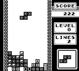
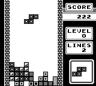

Loading navbar...
This hack swaps the Tetris music and sounds for the Game Boy Dr. Mario ones (No layout adjustments were made, so most music track and sound instances are off.)
 .bps patch file (5.53 KB)
.bps patch file (5.53 KB) 
